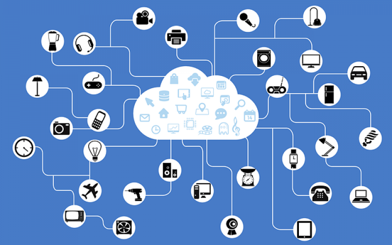
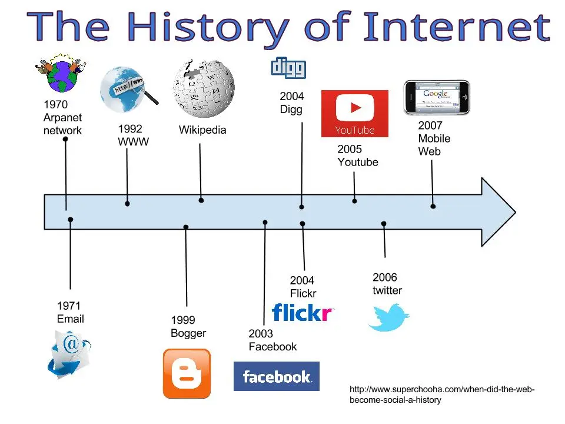

Так, що ж таке Інтернет? Протоколи Інтернету
Інтернет – це глобальна мережа комп’ютерів, яка працює так само, як і поштова система, лише із швидкістю до однієї другої секунди. Подібно до того, як поштова служба дозволяє людям надсилати один одному конверти, що містять повідомлення, Інтернет дає можливість комп’ютерам надсилати один одному невеликі пакети цифрових даних.

Для цього вони використовують загальну “мову” під назвою TCP / IP (протокол управління передачею / протокол Інтернету). Якщо ви в мережі, у вас є IP-адреса.
Як Інтернет працює
Коли ви надсилаєте лист, вам не потрібно знати про мікроавтобуси, поїзди та літаки, які перевозять його до місця призначення, чи скільки поштових відділень він проходить в дорозі. Також вам не потрібно знати, як ваші пакети даних в Інтернеті передаються через різні кабелі, маршрутизатори та хост-комп’ютери на шляху до місця призначення.
Однак різні пакети можуть приймати різні маршрути, що робить Інтернет відносно стійким. Відмова конкретного вузла або хоста, як правило, мало значить або не відіграє різниці для решти системи.
ЕЛЕКТРОННА ПОШТА ЦЕ… ЩО ТАКЕ E-MAIL: ВСЕ, ЩО ВАМ ТРЕБА ЗНАТИ
Якщо ви помістите лист в конверт, він може містити багато різних типів даних: любовний лист, рахунок-фактура, фотографія тощо. Пакети даних Інтернету також несуть різні типи даних для різних програм. До поширених типів належать веб-сторінки, електронні повідомлення та великі файли, які можуть бути цифровими відео, музичними файлами або комп’ютерними програмами.
Сьогодні Інтернет часто використовується, щоб забезпечити простий у користуванні інтерфейс для численних програм, включаючи електронну пошту, передачу файлів, групи новин Usenet та повідомлення (Інтернет-релейний чат). Це робить веб(мережа) та Інтернет схожими. Однак ці програми (мережеві) існували ще до винайдення Інтернету і досі можуть працювати без нього.
Походження та історія Інтернету
Інтернет походить від ARPAnet, створеного Агенцією просунутих дослідницьких проекти Міністерства оборони США у 1960-х роках. Було розвинуто багато інших мереж – деякі комерційними компаніями, деякі в різних країнах – але вони не могли легко спілкуватися між собою.
Вінт Серф і Боб Кан розробили TCP / IP, “Протокол взаємодії пакетної мережі” (1974) для підключення різних мереж. Таким чином, Інтернет був «мережею мереж». Інтернет-протокол (ІР) став домінуючим в роботі в мережі.
Наприкінці 1969 року на ARPAnet було лише чотири комп’ютери, і всі вони були в університетах США. Їх число зросло до 5000 Інтернет-хостів у 1986 році, після чого кількість користувачів швидко зросла в мільйони, а потім сотні мільйонів.
Недаремно Інтернет входить в списк винаходів, що змінили світ. Основними причинами цього масштабного зростання стали відкриття існуючої академічної та урядової мережі для комерційних користувачів та її швидке поширення із США до решти світу.
Союзними факторами були величезне зростання ринку персональних комп’ютерів у 1980-х роках, винахід Тіма Бернерса-Лі на початку 1990-х Всесвітної павутини та широке прийняття широкосмугового зв’язку у 2000-х.
Веб-браузери зробили Інтернет досить простим для користування. Маючи відносно дешеві персональні комп’ютери та переваги широкосмугового зв’язку, ними користуються понад мільярд людей.
Тепер, коли доступ до Інтернету стає популярним на мобільних телефонах, наступний мільярд користувачів має стати в Інтернеті досить скоро.